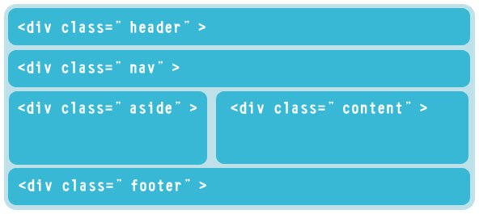
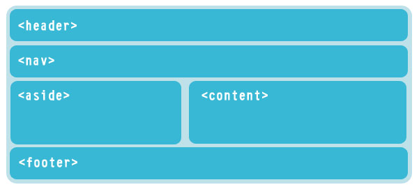
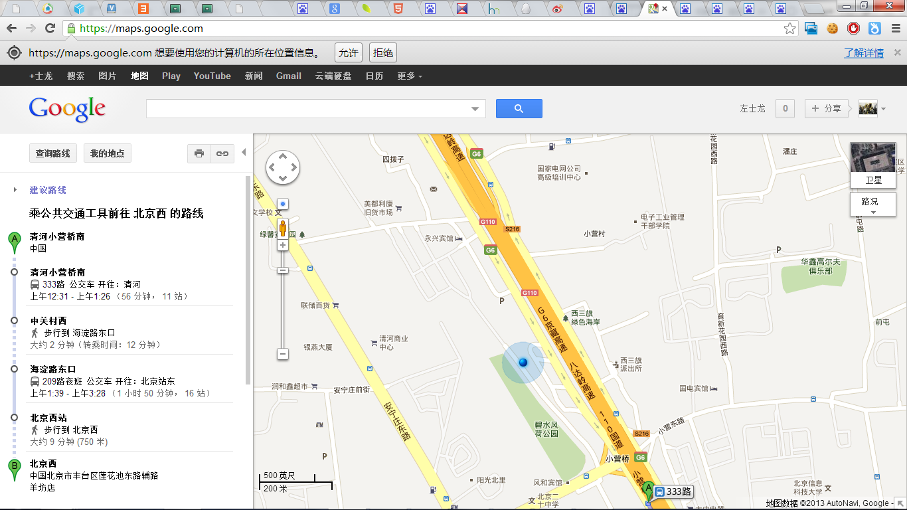
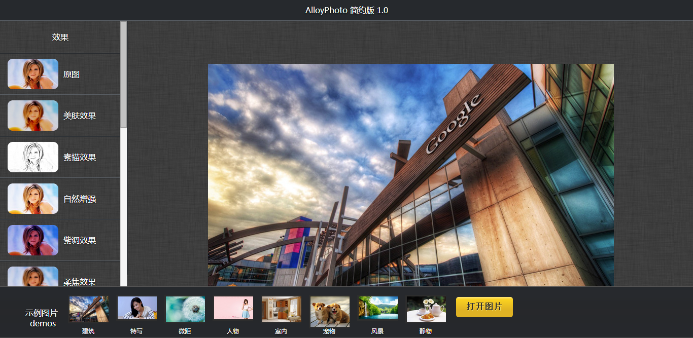
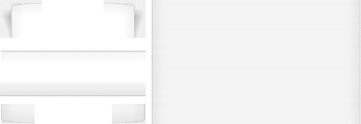

“变革者”
HTML5
Created by JD.COM UED FE
变革者
Innovator：
n. 改革者、创新者、革新者。
计算机科学之父 阿兰·麦席森·图灵 (Alan Mathison Turing)
阿兰·麦席森·图灵 （1912~1954），英国著名数学家、逻辑学家、密码学家，被称为计算机科学之父、人工智能之父。1912年6月23日生于英国帕丁顿，1931年进入剑桥大学国王学院，师从著名数学家哈代，1938年在美国普林斯顿大学取得博士学位，二战爆发后返回剑桥，曾协助军方破解德国的著名密码系统Enigma，帮助盟军取得了二战的胜利。1954年6月7日在曼彻斯特去世。他是计算机逻辑的奠基者，提出了“图灵机”和“图灵测试”等重要概念。人们为纪念其在计算机领域的卓越贡献而专门设立了“图灵奖”。
史蒂夫·乔布斯(Steve Jobs)
提耶利亚·艾迪
Innovator作为超级量子计算机veda实体化的一个存在


HTML5 是 HTML 下一个的主要修订版本，具有新的元素，属性和行为，现在仍处于发展阶段。
广义论及 HTML5 时，实际指的是包括 HTML、CSS 和 JavaScript 在内的一套可以使 Web 站点和应用更加多样化和功能更强大的更丰富的技术组合。
- HTML5 带来了什么
- 互联网正在进行的变革
- 受益于变革
- 变革过程中的问题
HTML5 带来了什么
- 语义化标签
- 离线 & 存储
- 设备访问
- 连通性
- 多媒体
- 2D/3D 绘图 & 效果
- 性能 & 集成
- CSS3
赋予网页更好的意义和结构。（其实也是一种返璞归真）
 

- 语义化标签
- 离线 & 存储
- 设备访问
- 连通性
- 多媒体
- 2D/3D 绘图 & 效果
- 性能 & 集成
- CSS3
- 语义化标签
- 离线 & 存储
- 设备访问
- 连通性
- 多媒体
- 2D/3D 绘图 & 效果
- 性能 & 集成
- CSS3
HTML5 引入了应用程序缓存，这意味着 web 应用可进行缓存，方便离线应用，加快加载速度，减少服务器负载。
以及本地存储功能，诸如，localStorage、Indexed DB、 Web SQL Database等。

- 语义化标签
- 离线 & 存储
- 设备访问
- 连通性
- 多媒体
- 2D/3D 绘图 & 效果
- 性能 & 集成
- CSS3
基于SVG、Canvas、WebGL及CSS3的3D功能，引起浏览器中惊人视觉变革。
- 语义化标签
- 离线 & 存储
- 设备访问
- 连通性
- 多媒体
- 2D/3D 绘图 & 效果
- 性能 & 集成
- CSS3
提供地理位置服务(从Geolocation)、设备方向、触控事件、指针锁定、摄像头(Camera)等接口，带桌面以及移动端更多的体验。
Google Map
- 语义化标签
- 离线 & 存储
- 设备访问
- 连通性
- 多媒体
- 2D/3D 绘图 & 效果
- 性能 & 集成
- CSS3
- Web Workers：能够把 JavaScript 计算委托给后台线程，通过允许这些活动以防止使交互型事件变得缓慢。
- 拖放：HTML5 的拖放 API 能够支持在网站内部和网站之间拖放项目。
- 全屏 API：为一个网页或者应用程序控制使用整个屏幕，而不显示浏览器界面。
- 指针锁定 API：允许锁定到内容的指针，这样游戏或者类似的应用程序在指针到达窗口限制时也不会失去焦点。
- ... ...
把你的图片拖到下面的容器内：
已经拖进过来的文件：
- 语义化标签
- 离线 & 存储
- 设备访问
- 连通性
- 多媒体
- 2D/3D 绘图 & 效果
- 性能 & 集成
- CSS3
- Web Sockets：允许在页面和服务器之间建立持久连接并通过这种方法来交换非 HTML 数据。
- Server-sent events：允许服务器向客户端推送事件，而不是仅在响应客户端请求时服务器才能发送数据的传统范式。
- WebRTC：这项技术，其中的 RTC 代表的是即时通信，允许连接到其他人，直接在浏览器中控制视频会议，而不需要一个插件或是外部的应用程序。
- ... ...

持久连接，及时推送
你值得拥有
- 语义化标签
- 离线 & 存储
- 设备访问
- 连通性
- 多媒体
- 2D/3D 绘图 & 效果
- 性能 & 集成
- CSS3
- 提供更多新的样式特性：如 box-shadow阴影、border-radius圆角等
- 提供样式动画：使用 CSS Transitions、CSS Animations 以在不同的状态间设置动画
- Web Font：自定义字体
- ... ...
- 语义化标签
- 离线 & 存储
- 设备访问
- 连通性
- 多媒体
- 2D/3D 绘图 & 效果
- 性能 & 集成
- CSS3
互联网正在进行的变革
Web Art
AlloyPhoto
Silk

百度贴吧
Google Map

腾讯 拍拍
腾讯 QQ装扮
mediaqueri.es

受益于变革
- 更加激动人心的视觉交互体验。
- 多设备、跨平台。
- 性能优化。
- 更加激动人心的视觉交互体验。
- 多设备、跨平台。
- 性能优化。
响应式设计
- 更加激动人心的视觉交互体验。
- 多设备、跨平台。
- 性能优化。
- 使用Web Workers调用后台线程，防止交互型事件变得缓慢。
- 使用css3、svg、web font等，降低静态资源流量消耗。

paper_sprits.png 6.87KB
/* This is the selector of the third box, here's where we specify the measure values, background colors, borders and shadows */
.box3{
margin: 50px;
width: 300px;
padding: 5px 0 ;
position:relative;
background:#fff;
background: -webkit-gradient(linear, 0% 20%, 0% 92%, from(#fff), to(#f3f3f3), color-stop(.1,#fff));
border: 1px solid #ccc;
-webkit-border-radius: 60px 5px;
-moz-border-radius: 60px/5px;
border-radius:60px/5px;
-webkit-box-shadow: 0px 0px 35px rgba(0, 0, 0, 0.1) inset;
-moz-box-shadow: 0px 0px 35px rgba(0, 0, 0, 0.1) inset;
box-shadow: 0px 0px 35px rgba(0, 0, 0, 0.1) inset;
}
/* In this pseudo class we generate the right top shadow */
.box3:before{
content: '';
width: 50px;
height: 50px;
top:0; right:0;
position:absolute;
display: inline-block;
z-index:-1;
-webkit-box-shadow: 10px -10px 8px rgba(0, 0, 0, 0.2);
-moz-box-shadow: 10px -10px 8px rgba(0, 0, 0, 0.2);
-webkit-transform: rotate(2deg)
translate(-14px,20px)
skew(-20deg);
-moz-transform: rotate(2deg)
translate(-14px,20px)
skew(-20deg);
-o-transform: rotate(2deg)
translate(-14px,20px)
skew(-20deg);
transform: rotate(2deg)
translate(-14px,20px)
skew(-20deg);
}
/* In this pseudo class we generate the top right shadow */
.box3:after{
content: '';
width: 100px;
height: 100px;
top:0; left:0;
position:absolute;
z-index:-1;
display: inline-block;
-webkit-box-shadow: -10px -10px 10px rgba(0, 0, 0, 0.2);
-moz-box-shadow: -10px -10px 10px rgba(0, 0, 0, 0.2);
-webkit-transform: rotate(2deg)
translate(20px,25px)
skew(20deg);
-moz-transform: rotate(2deg)
translate(20px,25px)
skew(20deg);
-o-transform: rotate(2deg)
translate(20px,25px)
skew(20deg);
transform: rotate(2deg)
translate(20px,25px)
skew(20deg);
}
paper_css3.css 1.22KB
writer less, do more
变革过程中的问题
- 浏览器兼容性 低级浏览器（IE6、IE7、IE8）
- 性能成本 大量的 webGL css动画造成CPU负荷上升
- 开发成本 动画构想、动画控制、多浏览器兼容性处理代码量高
浏览器兼容性
渐进增强

图：“渐进增强”的巧克力分层结构
（由上至下分别为：“内容”、“表现”和“客户端脚本”）
我们先从你的花生仁儿——内容讲起，它由丰富 (rich) 的语义化 (X)HTML 代码构成。
包裹着内容的是一层浓郁 (rich) 的 CSS 奶油。
最后，JavaScript 就是那层可以提升其美妙口感的坚硬糖衣（并确保它“只溶于口，不溶于手”）。
性能成本
测试、控制
不过分滥用，及时测试浏览器CPU占有率。
浏览器GPU 加速功能。
开发成本
工具
Adobe Edge Tools
Sencha Animator

- HTML5 带来了什么
- 互联网正在进行的变革
- 受益于变革
- 变革过程中的问题